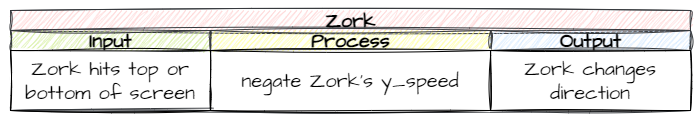

Add Zork Object#
Our boss for this game is called Zork, who is an evil alien. Most of the creation of Zork follows the same processes as creating the ship so we will race through those steps, then we will plan and implement the differences.
Create Zork class and add to Room#
Objects/Zork.py#
In the Objects directory make a new file and call it Zork.py. Then add the following code which creates the Zork class and adds its image:
1from GameFrame import RoomObject
2
3class Zork(RoomObject):
4 """
5 A class for the game's antagoist
6 """
7 def __init__(self, room, x, y):
8 """
9 Initialise the Boss object
10 """
11 # include attributes and methods from RoomObject
12 RoomObject.__init__(self, room, x, y)
13
14 # set image
15 image = self.load_image("Zork.png")
16 self.set_image(image,135,165)
Save the Zork.py file.
Objects/__init__.py#
In the Objects directory open the __init__.py file. Then add the following highlighted code:
1from Objects.Title import Title
2from Objects.Ship import Ship
3from Objects.Zork import Zork
Save and close the __init__.py file.
Rooms/GamePlay.py#
In the Rooms folder, open the GamePlay.py file. Then add the highlighted code below:
1from GameFrame import Level
2from Objects.Ship import Ship
3from Objects.Zork import Zork
4
5class GamePlay(Level):
6 def __init__(self, screen, joysticks):
7 Level.__init__(self, screen, joysticks)
8
9 # set background image
10 self.set_background_image("Background.png")
11
12 # add objects
13 self.add_room_object(Ship(self, 25, 50))
14 self.add_room_object(Zork(self,1120, 50))
Save and close the GamePlay.py file, then use the MainController.py to run and test the code.
If everything tests ok, you should now have our boss on the screen. Now it is time to think about it’s unique features.
Planning#
Since Zork is run by the computer we will have to animate it’s movement. Just like our spaceship, Zork will only move up and down. Unlike our spaceship, this will not be in response to a keystroke.
There are two aspects of Zork’s movement we need to automate:
starting Zork moving when the game begins
changing the direction of Zork’s direction when it reaches the top or bottom of the screen
Initial movement#
Let’s use an IPO table to plan out the initial Zork movement.
Output → we want Zork to move either up or down
Input → we want this to start when Zork is created
Process → we can randomly set Zork’s
y_speedto either-10(up) or10(down)
So our IPO table would look as such:

Instantiation
Remember classes are like blueprints that we use to create object instances. The term object refers to all the objects created from the same class (ie. Zork object), while the term instance refers to each individual object.
When we create an instance of an object from a class, this is called instantiation.
Changing direction#
When Zork hits the top or bottom of the screen, we don’t want it to stop, but rather to change direction (ie. y_speed from -10 to 10 or vice versa).
Let’s think about this in IPO terms:
Output → Zork moves in the opposite direction
Input → Zork touches top or bottom of the screen
Process → negate the value of Zork’s
y_speed(ie.-10becomes10or10becomes-10)
So our IPO table would be something like this:

Now we have conceptualised how we will make these happen, let’s get to the coding.
Initial movement code#
Objects/Zork.py#
Return the the Objects/Zork.py file to add the code for the initial movement. According to our IPO plan the event that triggers the movement is the instantiation of the Zork object. We know that when instantiate an object the __init__ method gets called, so that would be the logical place to put it.
We also know that we can use random.choice to choose a random item from a list. So if we have a list consisting of -10 and 10, random.choice can choose one. So let’s make these changes to the the Zork class by adding the highlighted code below:
1from GameFrame import RoomObject
2import random
3
4class Zork(RoomObject):
5 """
6 A class for the game's antagoist
7 """
8 def __init__(self, room, x, y):
9 """
10 Initialise the Boss object
11 """
12 # include attributes and methods from RoomObject
13 RoomObject.__init__(self, room, x, y)
14
15 # set image
16 image = self.load_image("Zork.png")
17 self.set_image(image,135,165)
18
19 # set inital movement
20 self.y_speed = random.choice([-10,10])
Unpacking this:
line 2 → importing random so we can use choice
line 20 → randomly choose between
-10and10and set that as Zork’sy_speed
Now save Zork.py and run MainController.py to test our code. Zork should either move up or down until it is off the screen.
Reverse Zork Direction#
Objects/Zork.py#
To reverse Zork’s direction we will use a similar process that we used to stop the ship from moving off screen. This will involve using step() to test if Zork is off screen. The only difference will be in the keep_in_room method where we will just reverse Zork’s y_speed.
Go back to Objects/Zork.py and add the highlighted code below:
1from GameFrame import RoomObject, Globals
2import random
3
4class Zork(RoomObject):
5 """
6 A class for the game's antagoist
7 """
8 def __init__(self, room, x, y):
9 """
10 Initialise the Boss object
11 """
12 # include attributes and methods from RoomObject
13 RoomObject.__init__(self, room, x, y)
14
15 # set image
16 image = self.load_image("Zork.png")
17 self.set_image(image,135,165)
18
19 # set inital movement
20 self.y_speed = random.choice([-10,10])
21
22 def keep_in_room(self):
23 """
24 Keeps the Zork inside the top and bottom room limits
25 """
26 if self.y < 0 or self.y > Globals.SCREEN_HEIGHT - self.height:
27 self.y_speed *= -1
28
29 def step(self):
30 """
31 Determine what happens to the Dragon on each tick of the game clock
32 """
33 self.keep_in_room()
We really only need to look at two lines here:
line 26 → checks if Zork has touched either the top or the bottom of the screen
line 27
negate a number (change its sign) → multiply it by
-1*=is similar to+=, it means take the value stored iny_speedmultiply it by-1, then store it back iny_speed
Testing#
Save Zork.py then run MainController.py to test that our code works.
Commit and Push#
We have finished and tested another section of code so we should make a Git commit.
To do this:
In GitHub Desktop go to the bottom left-hand box and write into the summary Added Zork.
Click on Commit to main
Click on Push origin
Now the work from this lesson is committed and synced with the online repo.
Completed file states#
Below are all the files we used in this lesson in their finished state. Use this to check if your code is correct.
Objects/Zork.py#
1from GameFrame import RoomObject, Globals
2import random
3
4class Zork(RoomObject):
5 """
6 A class for the game's antagoist
7 """
8 def __init__(self, room, x, y):
9 """
10 Initialise the Boss object
11 """
12 # include attributes and methods from RoomObject
13 RoomObject.__init__(self, room, x, y)
14
15 # set image
16 image = self.load_image("Zork.png")
17 self.set_image(image,135,165)
18
19 # set inital movement
20 self.y_speed = random.choice([-10,10])
21
22 def keep_in_room(self):
23 """
24 Keeps the Zork inside the top and bottom room limits
25 """
26 if self.y < 0 or self.y > Globals.SCREEN_HEIGHT - self.height:
27 self.y_speed *= -1
28
29 def step(self):
30 """
31 Determine what happens to the Dragon on each tick of the game clock
32 """
33 self.keep_in_room()
Objects/__init__.py#
1from Objects.Title import Title
2from Objects.Ship import Ship
3from Objects.Zork import Zork
Rooms/GamePlay.py#
1from GameFrame import Level
2from Objects.Ship import Ship
3from Objects.Zork import Zork
4
5class GamePlay(Level):
6 def __init__(self, screen, joysticks):
7 Level.__init__(self, screen, joysticks)
8
9 # set background image
10 self.set_background_image("Background.png")
11
12 # add objects
13 self.add_room_object(Ship(self, 25, 50))
14 self.add_room_object(Zork(self,1120, 50))